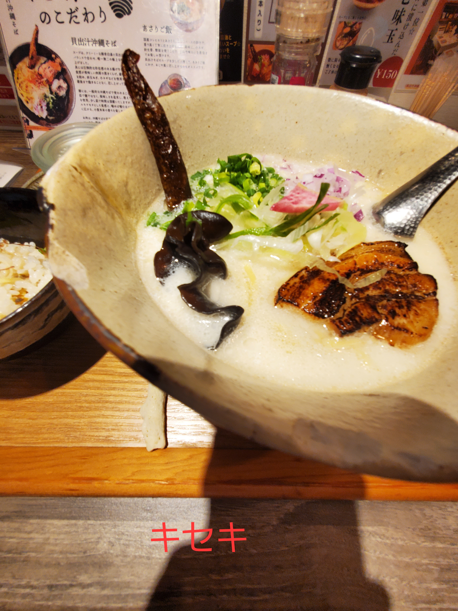
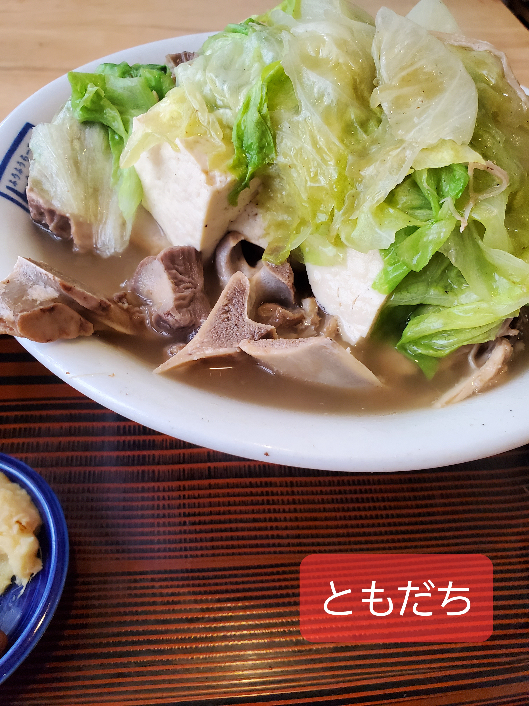
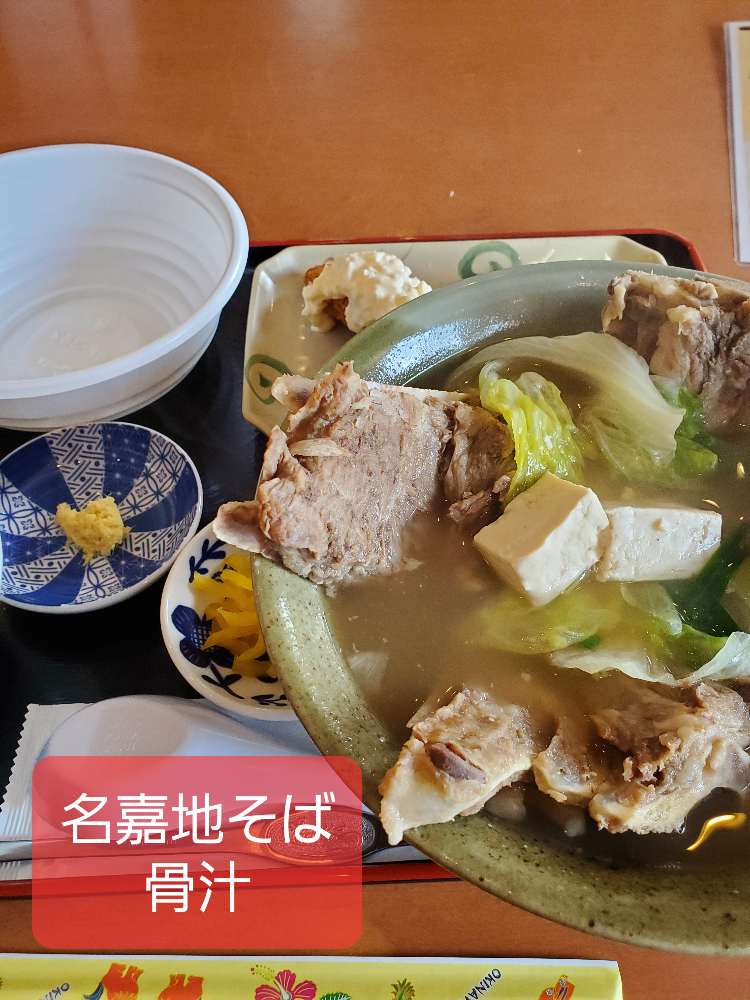
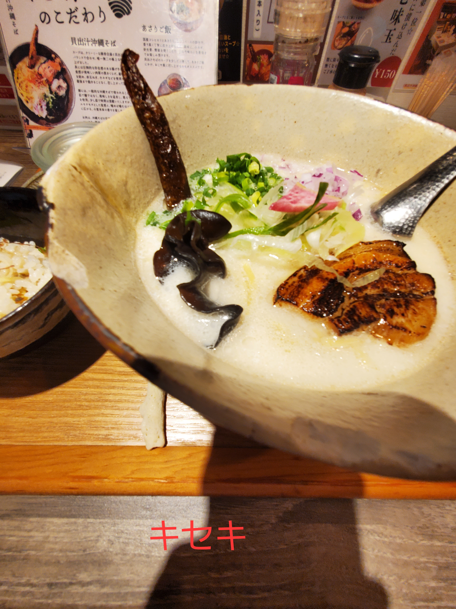
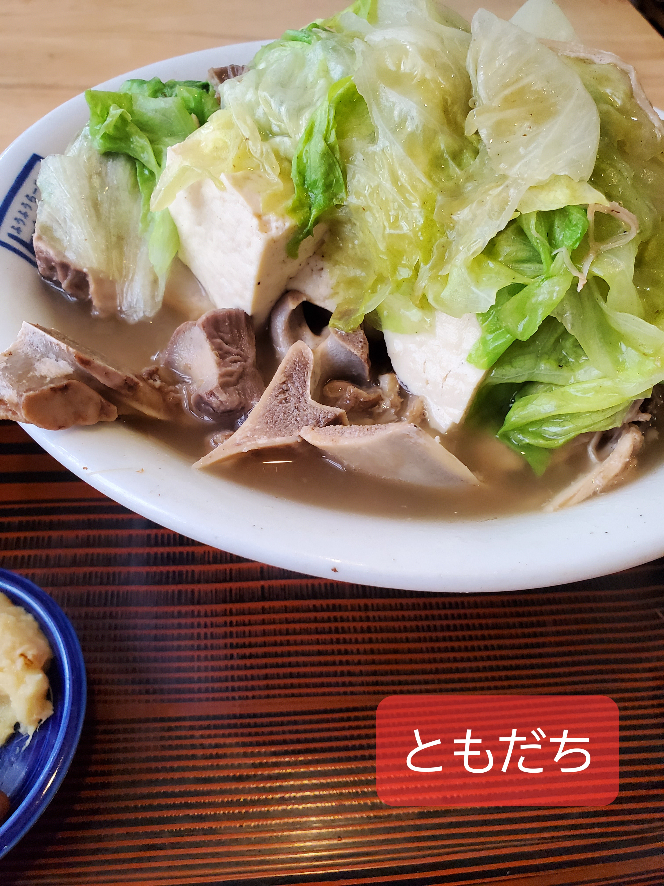
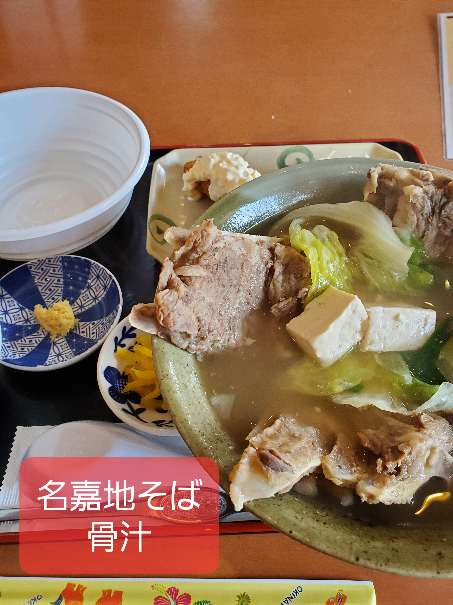

沖縄そばとは？
沖縄そばの魅力
沖縄そばは、沖縄県民のソウルフードであり、その歴史は古く、琉球王朝時代にまで遡ると言われています。小麦粉を主原料とした独特の麺は、コシがありながらもモチモチとした食感が特徴です。豚骨や鰹節から丁寧に取られた出汁は、あっさりとしていながらも奥深い旨味が凝縮されており、一口飲むごとに心が安らぎます。具材には、じっくり煮込まれた三枚肉やソーキ、かまぼこ、紅しょうがなどが彩り豊かに盛り付けられ、見た目にも食欲をそそります。沖縄そばは、単なる麺料理ではなく、沖縄の歴史、文化、そして人々の温かさが詰まった、まさに「食べる芸術品」です。ぜひ、あなたもこの至福の一杯を体験してください。
沖縄そばの食べ方
まずは、そのままのスープと麺の味をじっくりと味わってください。その後、お好みでコーレーグース（島唐辛子の泡盛漬け）や紅しょうがを加えて、味の変化を楽しむのがおすすめです。ジューシー（沖縄風炊き込みご飯）と一緒に食べるのも定番のスタイルです。
 




